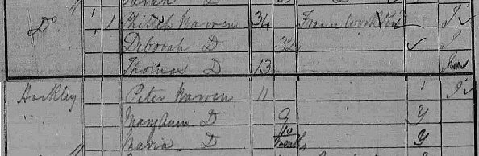

Phillip was born between 1802 and 1805, the son of Thomas Warren a Framework Knitter. He was born in Dublin, Ireland, a city still overshadowed by the events of the Rebellion of 1798. Little is known of his early life and we do not know if he remained in Dublin. We do know that in about 1827 he met and married Deborah Jelley and they had two sons in Ireland before leaving Ireland and settling in Nottingham in about 1831. It isn't clear why they moved. It could have been the repression and economic inequality faced by Catholics in Ireland at the time or it could simply have been the desire to find work. It is estimated that about one million left Ireland between the end of the Napoleonic Wars and the Great Famine of 1847. Forced to leave by the huge rise in population and the unjust system of land tenure, their passage made easier by more accessible 'steampacket' transport to England and an English education.
The Irish population of Nottingham was small at this time and the Warren's settled in Hockley which, together with Leenside, was the centre of the immigrant Irish population of Nottingham. There are many accounts of the appalling conditions in these areas: "in one court containing about 16 rooms: 11 of them occupied by the Irish and 90 persons reside in the 11 rooms, I counted myself. The rooms are very small and miserable dwellings."
Phillip was described as a Framework Knitter and a high proportion of the Irish settled in Nottingham at this time were employed in the hosiery industry. Many had left Ireland due to the collapse of the Irish Woolen and Cotton industries following the import of cheap British goods in the early 1830s. Dublin in particular had a tradition of stocking and glove making. There had been contact between Nottingham and Dublin framework knitters as early as 1812 when reputed Luddite Gravener Henson travelled to Dublin to enlist support from Irish workers.
The Nottingham framework knitting trade would have been familiar to an Irish stockinger such as Phillip and other members of the family would also have been involved in 'sewing up'. The work was hard and poorly paid with many families working a 70 hour week. In 1841 Nottingham was again in the grip of a depression and this had a serious impact on the framework knitters fuelling support amongst this group for Chartist radicals.

By 1844 Phillip's wife Deborah had died and Phillip was left to bring up their five children, which included three children born in Nottingham since their arrival in 1831. Within nine months Phillip had met and married another women. Bridgett Collins was a widow and a member of the Nottingham Irish community. The two were married at the Catholic Chapel of St John in George Street in March 1845. Within two years the Irish population was to swell again fed by the Famine that swept through Ireland killing thousands. This was also reflected in tha acute distress in Nottingham and the resurgence of Chartism in 1847. There was strong support for the Chartists amongst the framework knitters and in particular the Irish framework knitters leading to the election of Feargus O'Connor as Chartist MP for Nottingham in 1847.
The 1851 Census shows that Phillip's marriage to Bridgett Collins was short lived. Its unclear whether she died or they separated as in 1851 he was living with Ann Poulson and her children in Loughborough. By 1861 the Poulson's had all adopted the name Warren.
Phillip died of Bright's Disease in 1867, aged 65 at Currant Street, Nottingham.